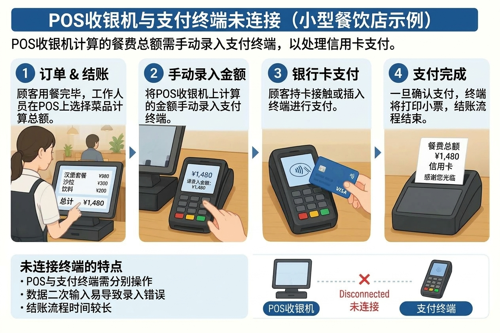
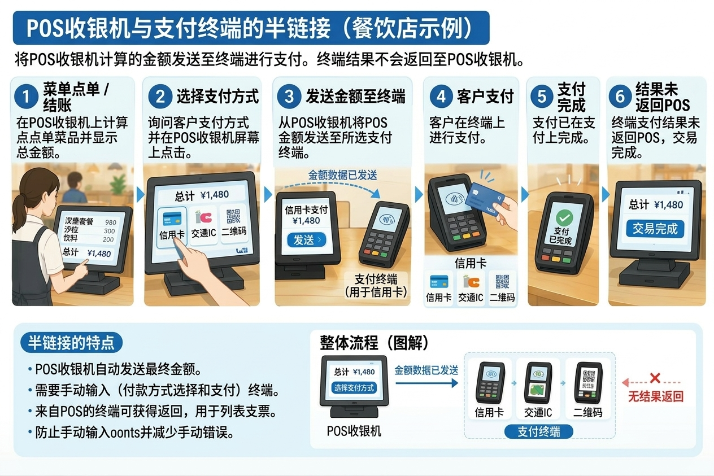
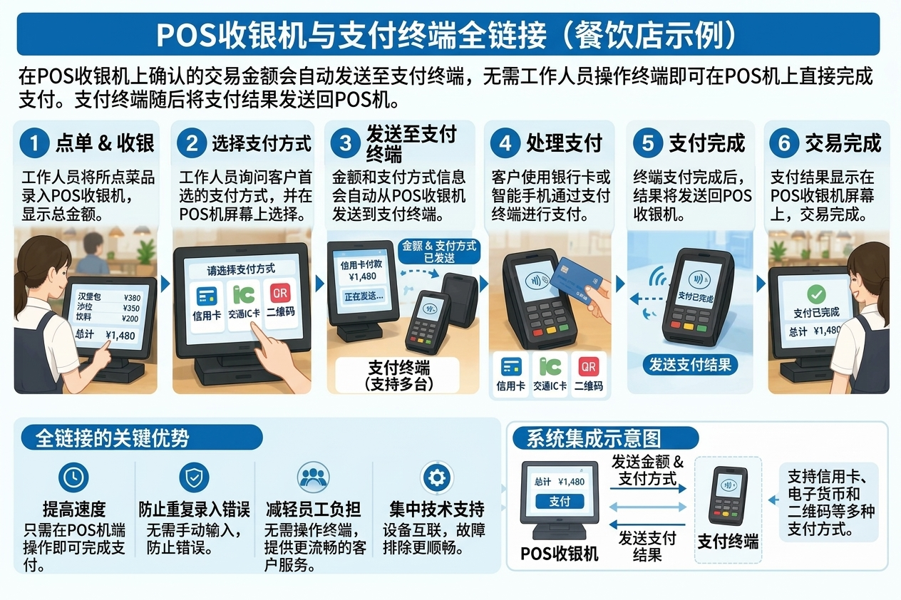
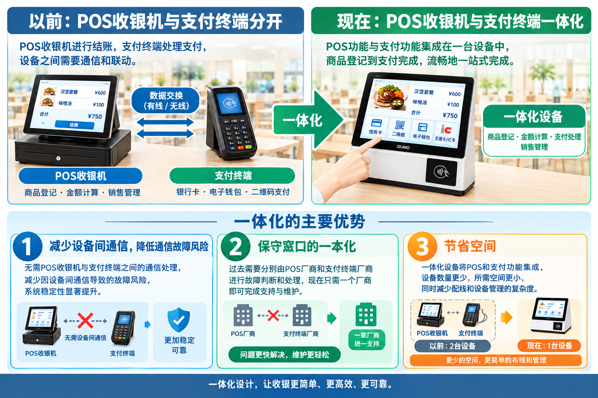

本文要点
- POS收银机与支付终端的角色区别
- “非联动”“半联动”“完全联动”三种联动方式的区别
- 食堂自助收银所需的菜品价格识别（RFID与AI图像识别）机制
- 不依赖外部支付终端的一体化食堂自助收银的特点与优点
要理解结算机制，POS收银机与支付终端的角色，以及两者如何联动，是重要的要点。尤其在企业食堂和学生食堂，还面临如何识别没有条形码的菜品价格这一课题。本文将从POS收银机与支付终端的关系，到食堂自助收银的进化，进行通俗易懂的解析。
1. POS收银机的作用是什么？
要点：POS收银机是一种记录并汇总“何时、销售了什么、多少件、以多少价格销售”等销售数据的收银系统，可用于销售汇总、销售状况分析和库存管理。
POS收银机是指在商品销售时，具备记录并汇总“何时、销售了什么、多少件、以多少价格销售”信息的POS（Point of Sale：销售时点信息管理）功能的收银系统。
通过自动记录商品销售数据，可用于销售汇总、销售状况分析和库存管理等。
在超市和便利店，通常采用读取商品条形码以获取商品信息和价格、计算结算金额的机制。
2. 支付终端的作用是什么？
要点：支付终端是利用信用卡、电子货币、二维码等进行无现金支付的设备。POS收银机管理“销售了什么、以多少价格”，而支付终端负责“以哪种支付方式、支付多少金额”。
支付终端是利用信用卡、电子货币、二维码支付等进行无现金支付的设备。
POS收银机管理“销售了什么、以多少价格”，而支付终端负责“以哪种支付方式、支付多少金额”的支付处理。
也就是说，POS收银机与支付终端各自承担不同的角色，通过协同实现顺畅的结算。
3. POS收银机与支付终端的三种联动方式
要点：POS收银机与支付终端的联动方式一般分为“非联动”“半联动”“完全联动”三种。联动程度越高，越能防止金额的重复输入，并简化结算操作。
POS收银机与支付终端的联动方式一般分为“非联动”“半联动”“完全联动”三种。
① 非联动类型：在各设备分别输入金额
这是POS收银机与支付终端不联动的方式。
在POS收银机确定结算金额后，由员工将相同金额也输入到支付终端进行支付。

特点
- 需要分别操作POS收银机与支付终端
- 由于金额要输入两次，可能发生输入错误
- 结算容易耗费时间
② 半联动类型：联动金额数据，在支付终端操作
这是将POS收银机确定的结算金额自动发送至支付终端的方式。
无需重新输入金额，但在支付终端一侧可能需要选择支付方式、开始支付等操作。

特点
- 可防止金额的重复输入
- 可减少手动输入造成的金额错误
- 需要手动将支付终端的支付结果在POS收银机上标记为完成的操作。
③ 完全联动类型：以POS收银机的操作为起点进行支付
这是在POS收银机开始支付处理后，结算金额等信息联动至支付终端、支付处理随之推进的方式。
无需在支付终端一侧输入金额，在支持的系统中可以POS收银机一侧的操作为中心推进结算。

特点
- 可简化结算操作
- 可防止金额的重复输入
- 有助于缩短结算时间、减轻员工负担
不过，即使是完全联动，根据支付方式，仍可能需要用户刷卡、输入密码等操作。
三种联动方式的比较
| 比较项目 | 非联动 | 半联动 | 完全联动 |
|---|---|---|---|
| 金额自动联动 | 无 | 有 | 有 |
| 向支付终端输入金额 | 需要 | 不需要 | 不需要 |
| 支付终端一侧的操作 | 需要 | 可能需要 | 原则上以POS一侧的操作为中心推进 |
| 金额的重复输入 | 会发生 | 可防止 | 可防止 |
| 结算操作的简化 | 有限 | 一定效果 | 可期待更高效果 |
※实际的操作方法和联动范围因产品和支付方式而异。
4. 食堂的自助收银需要识别菜品价格的机制
要点：在企业食堂和学生食堂，菜品和餐具没有条形码，因此需要自动识别菜品价格的机制。代表性方法有RFID识别方式和AI图像识别方式。
在企业食堂和学生食堂，与超市商品不同，菜品和餐具通常没有条形码。
因此，若直接使用一般的POS收银机，就需要手动输入每道菜的价格，或通过其他方法登记商品信息。
尤其在用餐人数众多的食堂，能够自动识别菜品价格、快速结算的机制非常重要。
代表性方法有RFID识别方式和AI图像识别方式。
RFID收银：通过餐具的RFID标签识别菜品
在RFID方式中，在餐具等上安装RFID标签，由读取器读取标签信息。
通过将预先登记的标签与菜品信息对应，获取菜品价格并计算结算金额。
- 读取安装在餐具上的RFID标签
- 根据标签信息识别菜品
- 获取登记价格并计算合计金额
AI识别收银：从摄像头图像识别菜品
在AI图像识别方式中，由AI分析摄像头拍摄的菜品和餐具图像，识别菜品的种类。
通过将识别结果与预先登记的商品信息和价格进行比对，自动计算结算金额。
- 用摄像头拍摄菜品和餐具
- AI从图像识别菜品
- 获取登记价格并计算合计金额
在这种方式中，无需为每件餐具安装RFID标签，而是通过图像识别来识别菜品。不过，由于识别精度会受到菜品外观、摆盘、照明条件等的影响，因此根据导入环境进行验证十分重要。
5. 食堂自助收银中的POS功能与支付功能
要点：实现食堂自助收银，既需要识别菜品并计算价格的功能，也需要处理用户支付的功能。许多系统采用将承担POS功能的装置与外部支付终端完全联动的构成。
要实现食堂自助收银，既需要识别菜品并计算价格的功能，也需要处理用户支付的功能。
在一般构成中，流程如下。
- 通过RFID或AI图像识别识别菜品
- 根据登记价格计算合计金额
- 用POS功能管理结算信息
- 与支付终端联动处理支付
- 确认支付结果并完成结算
在许多系统中，采用将承担POS功能的装置与外部支付终端组合、并使二者完全联动的构成。
这种方式可以高效完成从菜品识别到结算金额计算、支付处理的整个过程。另一方面，在使用外部支付终端时，还需要考虑设备间的连接、所支持的支付方式，以及维护和支持体制等。
6. 不依赖外部支付终端的食堂自助收银
要点：出云创安（IZUMO SOAN）的食堂自助收银在菜品价格识别与结算处理之外，还提供人脸识别、二维码、刷卡等支付功能。不依赖另行连接外部支付终端的构成，即可构建适合食堂运营的结算系统。
出云创安（IZUMO SOAN）提出的食堂自助收银，是将POS收银机与支付终端一体化的产品。

出云创安（IZUMO SOAN）提出的食堂自助收银，是在菜品价格识别与结算处理之外，还提供人脸识别、二维码、刷卡等支付功能的系统。
其特点是不依赖另行连接外部支付终端的构成，可构建适合食堂运营的结算系统。
可期待的优点
1. 系统构成的简化
通过将从菜品识别到结算、支付一体化设计，可抑制因连接外部设备而带来的构成复杂性。
2. 节省空间
与追加独立支付终端的构成相比，有可能减少设备的安装空间。
3. 维护运营的高效化
通过一体化设计整个系统，可减轻在设备间排查问题的负担，更易于高效进行运营和维护。
4. 适合食堂的支付方式
可根据食堂的运营方针和用户需求，考虑人脸识别、二维码、刷卡等支付方式。
※可使用的支付方式、与外部服务的连接要求、支付处理的构成，因导入的产品和服务的规格而异。
7. 食堂运营中的支付手续费课题
要点：在企业食堂和学生食堂的运营中，“营养”“健康”“价格”是重要的关键词。容易被忽视的无现金支付手续费一旦累积，可能挤压利润，因此比较总成本十分重要。
在企业食堂和学生食堂的运营中，不仅菜品的品质重要，“营养”“健康”“价格”这三个关键词也很重要。
要以实惠的价格为用户提供营养均衡的餐食，不仅要关注食材费和人工费，还要关注每天产生的运营成本。
其中容易被忽视的，便是无现金支付的手续费。
支付手续费是食堂不可忽视的成本
一般的无现金支付服务，根据合同条件，可能产生约3%的支付金额手续费。
例如，在每餐提供500日元餐食的食堂，若年度无现金支付额为3,000万日元，按3%手续费率计算，每年将产生90万日元的费用。
| 项目 | 金额 |
|---|---|
| 每餐价格 | 500日元 |
| 年度支付交易额 | 3,000万日元 |
| 支付手续费率（假设） | 3% |
| 年度支付手续费 | 90万日元 |
※上述为说明机制的试算，并非表示实际的手续费率或交易额。
在食堂运营中，这类成本不断累积，可能挤压利润。在难以轻易提价的企业食堂和学生食堂，尤其需要慎重的成本管理。
支付系统的选择，左右食堂的价格与服务
在推进食堂无现金化时，不仅要比较结算的速度和便利性，还要比较包含支付手续费在内的总成本，这一点非常重要。
出云创安（IZUMO SOAN）的食堂自助收银具备人脸识别、二维码、刷卡等支付功能，可实现不依赖外部支付终端的系统构成。
例如，若采用食堂内用户账户或预付余额的方式，则可考虑与一般信用卡支付等不同的成本结构。
重要的不仅仅是将结算自动化。而是通过系统导入带来的省力化与运营成本的合理化，致力于营造一个能够以健康、实惠的价格为用户提供营养均衡餐食的环境。
8. 总结：食堂自助收银中“菜品识别”与“支付”同样重要
要点：通过使POS收银机与支付终端联动，可高效化结算处理。在食堂，重要的是通过RFID或AI图像识别识别没有条形码的菜品，自动计算合计金额，并组合适当的支付功能。
POS收银机与支付终端各自承担不同的角色。通过使二者联动，可防止金额的重复输入，高效化结算处理。
另一方面，在企业食堂和学生食堂，还面临如何识别没有条形码的菜品并自动计算价格这一课题。
通过RFID或AI图像识别识别菜品、自动计算结算金额，同时组合适当的支付功能，是食堂自助收银的重要要点。
出云创安（IZUMO SOAN）通过兼顾从菜品价格识别到结算、以及人脸识别、二维码、刷卡等支付的食堂自助收银，助力企业食堂和学生食堂收银业务的高效化。
从菜品识别到支付，让食堂的结算更简单。
产品详情请参阅食堂自助收银产品介绍页面。